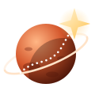

Earth ↔ Mars right now
- Distance
- —
- Signal one way
- —
- Question + answer
- —
Plan with today's conditions.

Drag to move, scroll to zoom, click the map to pick any point on Mars.
| Route comparison | Selected | Shortest |
|---|---|---|
| Choose a start and a destination to compare routes. | ||
Martian Map is a prototype for risk-aware route planning on Mars, built by Team Starseekers. Imagery and elevation: NASA / JPL / USGS / MOLA / CTX (credit: NASA/JPL/MSSS/The Murray Lab for CTX).
Today on Mars
Plan with today's conditions.
Mars time uses NASA GISS Mars24 (Allison & McEwen 2000). Planet positions use JPL approximate orbital elements. Images: NASA/JPL-Caltech, NASA Image and Video Library. Built by Team Starseekers 🇴🇲